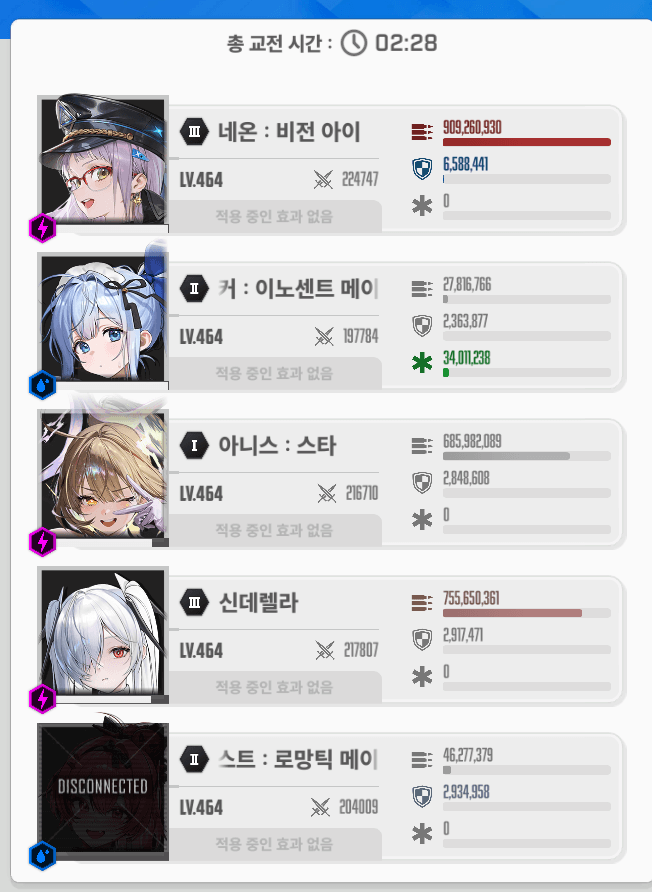

· 노말 36지 보스(검은뱀) 공략 343K 최저클(목단덱 제외)
· 노말 44지 보스(앨트루이아) 공략 484K 최저클
· 하드 34지 보스(베히모스) 공략 1061K
클리어할때 녹화를 안켜서 스샷은 없는 점 양해부탁
1) 조합
네온 앵커 돌니스 신데 메스트
간단한 스펙
네온 차4우3공3장2 (우공합 80)
아니스 우4공4장1 (우공합 130)
신데 우4장1 (우코합 80)

2) 버스트 순서
앵네
마신
반복
3) 택틱
<조우시>
아니스 잡고 버충 후 앵커-네온 버스트 사용
베히 따발총이 네온을 조준하는데, 건강한몸 무적 + 앵커 피뻥으로 엄폐소모 없이 버티기 가능
이후 버충만 해놓고 장전후 다음페이즈 진입
<1페>
잠시 기다렸다가 베히가 돌 집으려고 부들부들거리기 시작할때
메스트-신데 버스트 사용
이후 게임끝날때까지 버스트는 충전되는대로 바로바로 사용해야 돌파괴가 스무스하게 가능함
버스트끝나기 1초전 앵커 잡고 풀차징+앵톡이로 버충 필수(앵커 노장탄으로도 충분히 가능했음)
네온+신데 조합이라 돌 조준을 안해도 돌이 알아서 요격되니까 베히만 계속 때려서 딜로스 최소화
다만 버스트가 돌던진후 켜지는 타이밍에는 적절히 돌을 때리는 정도의 컨트롤은 필요함
속성저지때는 네온때문에 조준선을 옮기지않아도 알아서 저지가 됨
이때도 계속 몸통만 치면됨
저지 후에 네온 무적풀리는 타이밍때 따발총 맞고 급사하니까 딱 한번만 개인엄폐 필요
이때 엄폐 많이 갈리면 이후 박치기 패턴때 버티기 힘들어짐
네온이 아슬아슬 안죽을 정도로 맞아서 엄폐물체력 아껴놔야함
<2페>
2페 진입때도 마찬가지로 계속 버스트 무지성 사용
번갯불 패턴도 앵커 피뻥으로 버텨지니까 빨간원저지만 바로바로해주면 되고
박치기때만 전체 엄폐 사용
족자저지도 버스트 킨상태로 입장하고 바로 부수고 나와서 딜하면댐
4) 핵심요약
1. 버스트 끝날때 맹커 풀차징+톡톡이로 버쿨 안밀리게 하기
2. 네온 엄폐물체력에 유의
---------------
노말 베히처럼 초단위로 깎을 필요도 없고 쉬운 느낌이긴한데
아니스 네온 출시 이후 공유된 공략이 별로 없고
특히 웡 없는 공략은 찾기가 힘들어서 웡없찐 뉴비들을 위해 공유함
그리고 공략 이것저것 봤는데 풀영상 시청하고 직접 분석하는거보다
간단하게 택틱만 보고가는게 더 이해가 잘될거라생각함
딜자체는 널널했으니 최저클은 다음에 지나갈 뉴비들이 깎아서 공략 써줄듯
딱 2페 베히 박치기 두번 버틸정도만 되면 무조건 깨는거삼